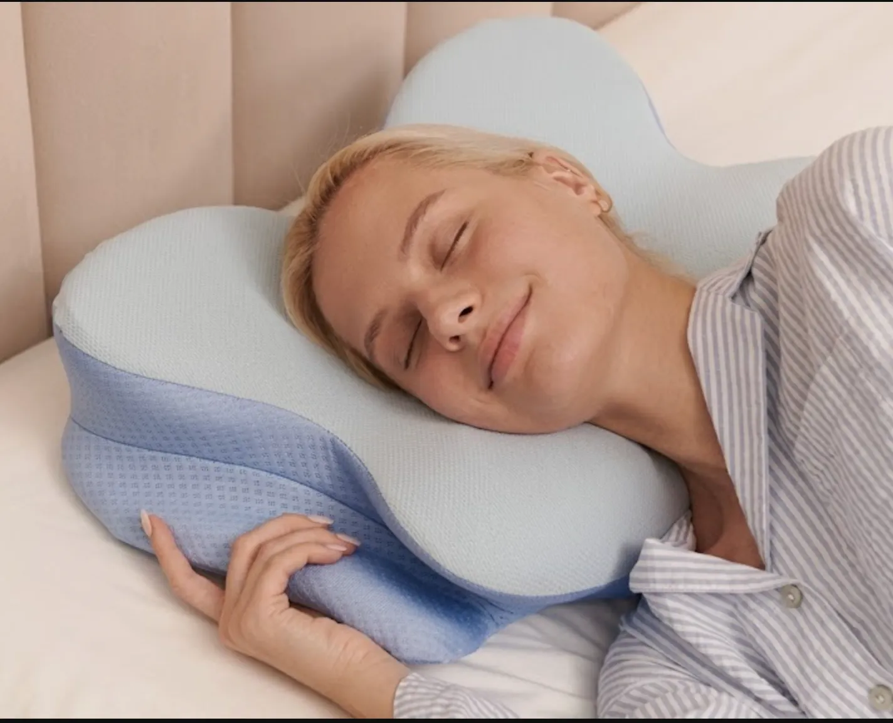
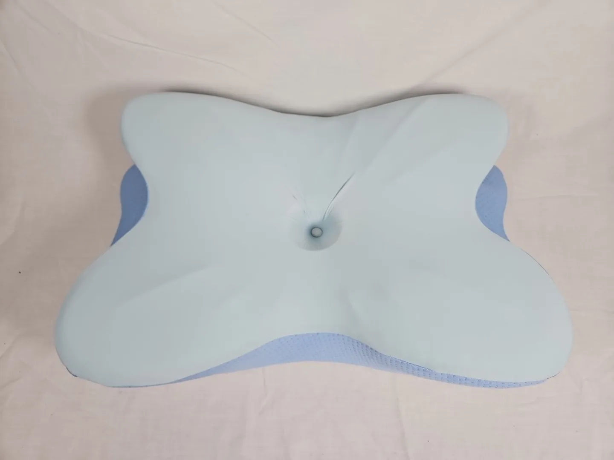
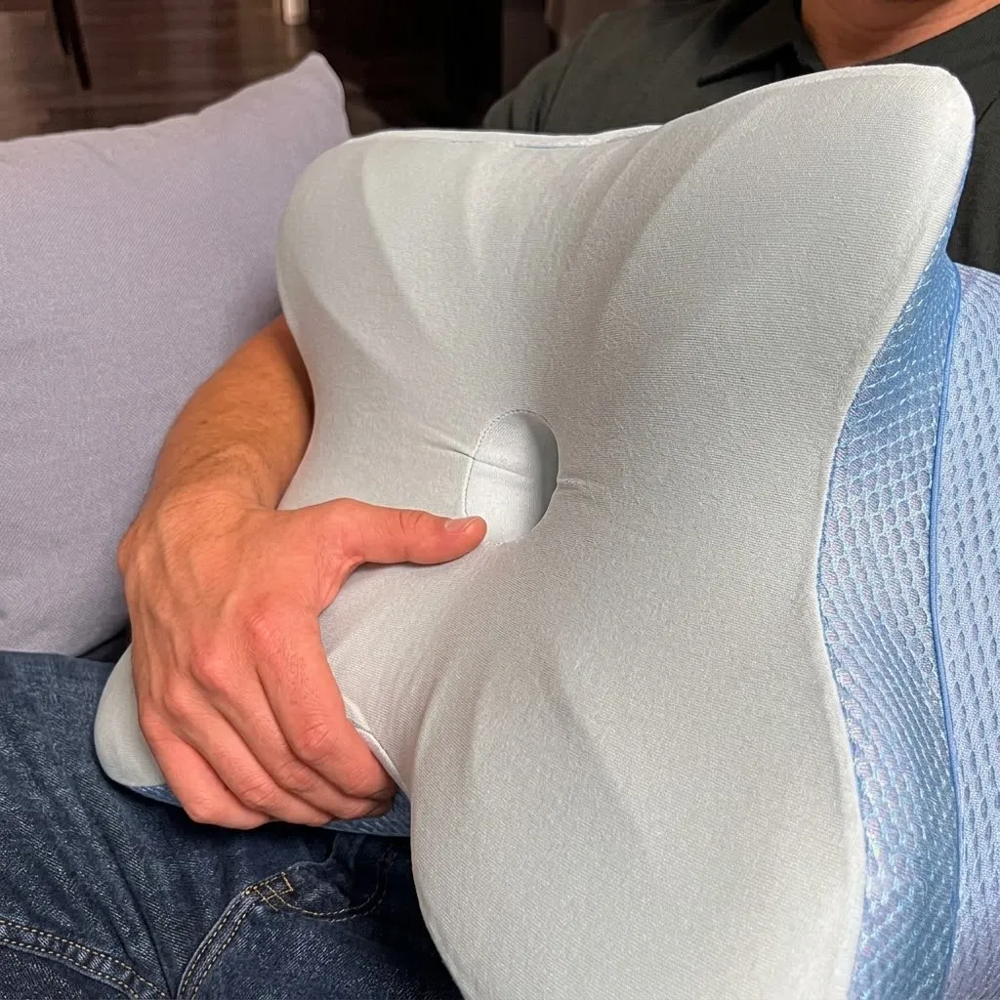

Derila Ergo Pillow is an advanced ergonomic memory foam pillow that will allow you to get a deep sleep, and Derila Pillow will give you additional comfort by supporting your head, neck, and shoulder. Unlike regular pillows that may compress and move during your sleep or even make your spine and neck strained in the morning, Derila is equipped with a unique design which allows it to gently reshape according to your body and keep your spine and neck in a more comfortable position at night. You can sleep either on your back, side, or stomach using Derila Pillow.
Derila Ergo Reviews
"Every morning I would awaken feeling stiff neck, but thanks to Derila Ergo® I no longer experience that feeling. The pillow is so comfortable that when I rest at night, my neck is supported in the most natural way possible. This is the only pillow I have ever come across which provides comfort along with correct alignment."

“I have tested a lot of pillows in the past but have been very impressed with the effectiveness of Derila Ergo®. My posture is much improved, and I no longer get headaches when I wake up. It is supportive but also comfortable, as if it was tailored to my neck!”

"I bought Derila Ergo® to minimize my snoring as well as the pain that I feel in the mornings due to my back. Just after one week, there was an immense improvement on both. Its ergonomic design is designed to keep my head in the correct position, and the memory foam is of premium quality."

Derila Ergo is an ergonomic pillow designed to provide targeted support for the head, neck, and shoulders while sleeping. Unlike a traditional flat pillow, it is designed around an ergonomic shape intended to encourage a more natural sleeping posture and comfortable alignment during the night. The overall concept is to create a supportive sleep surface that helps the head and neck rest in a more balanced position rather than allowing them to sink too deeply or remain at an awkward angle.
The pillow is generally marketed toward people who experience discomfort from using ordinary pillows or who want additional support while sleeping. Its contoured structure is intended to accommodate common sleeping positions, including back and side sleeping, while providing cushioning around the head and neck area. This type of design can also make it easier for sleepers to maintain a consistent position instead of repeatedly adjusting their pillow during the night.
Another important aspect of Derila Ergo is its focus on everyday sleeping comfort and ergonomic support. A suitable pillow can influence how the head and neck are positioned relative to the rest of the body, particularly when someone spends several hours in the same sleeping position. Derila Ergo is therefore positioned as a practical sleep accessory for people looking to improve their nighttime comfort without making major changes to their bedtime routine.
Individual experiences can vary depending on factors such as sleeping position, body shape, preferred pillow firmness, and personal comfort preferences. Derila Ergo should be viewed primarily as a supportive ergonomic pillow rather than a medical treatment or a guaranteed solution for neck or back problems.
Derila Ergo ensures that the correct neck and back posture is maintained through proper alignment during sleep. The ergonomic shape allows your head to rest in a comfortable and relaxed manner that does not cause any strain on the joints in the neck. This ensures that you do not wake up with stiffness.
This type of pillow is made from a form of adaptive memory foam that adjusts its shape according to the weight and heat generated by the body. This enables the pillow to take on an exact shape depending on the user’s contours. The memory foam helps distribute pressure evenly on the neck and shoulder areas.
Derila Ergo is also good for facilitating airflow and better breathing since it raises your head to the best possible angle. This ensures that you have a more open airway, making it less likely for you to snore. Consequently, people can sleep soundly throughout the night.
In summary, the Derila Ergo pillow is an advanced pillow that makes use of ergonomic design, pressure relieving memory foam, and proper head elevation to enhance healthy sleeping patterns. Through alignment, relaxation of muscles, and breathing efficiency, this pillow offers a simple yet powerful improvement over conventional pillows.
Since Derila Ergo is an ergonomic sleep pillow, the term “ingredients” is better understood as the materials and components used in its construction rather than edible ingredients. The exact materials can depend on the specific Derila Ergo version, so the manufacturer’s product specifications should be used for a definitive material list.
100% Satisfaction – 30-Days Money-Back Guarantee
Derila Pillow comes with a no-risk 30-day money-back guarantee from us. If you do not see significant results or are not happy with the product in any way, we will give you a complete refund without any trouble.
It is that simple to let us know within 30 days after your purchase and we will handle everything from there. You even get a refund despite using the item.
This will allow you to experience the Derila Pillow within the comfort of your own home for an entire month without any risks at all.
Derila Ergo is an ergonomic sleep pillow designed to provide supportive cushioning for the head, neck, and shoulders during sleep. Unlike a traditional flat pillow, its contoured structure is designed to follow the body's natural positioning and provide more structured support. The goal is to create a comfortable sleeping surface that helps maintain a more natural head and neck position while resting. Derila Ergo can be useful for people who prefer an ergonomic pillow design or find that conventional pillows do not provide the level of support they want. It is intended for everyday comfort and sleep support and should not be considered a medical treatment for persistent pain or other health conditions.
Derila Ergo is designed around the principle that appropriate pillow support can contribute to a more comfortable sleeping posture. Its shaped construction provides designated areas for the head and neck, helping prevent the head from sinking too deeply or being positioned at an awkward angle. By providing more consistent cushioning and support, the pillow is intended to make it easier to settle into a comfortable sleeping position. Individual results can vary because factors such as sleeping position, body shape, mattress firmness, and personal preference all influence how a pillow feels.
Derila Ergo is designed to accommodate common sleeping positions, particularly side and back sleeping. Side sleepers generally benefit from adequate support between the head and mattress so the neck does not bend excessively toward the mattress. Back sleepers may prefer a different level of pillow height and support to keep the head comfortable. The ergonomic contours of Derila Ergo are intended to provide structured support in these positions, although the ideal feel will differ from one person to another. People who frequently change sleeping positions may also need some time to become accustomed to an ergonomically shaped pillow.
Derila Ergo is a sleep pillow rather than a dietary supplement, so it does not contain nutritional ingredients or active compounds. Instead, its construction consists of cushioning and covering materials intended to provide comfort and support. The internal material is designed to provide structure beneath the head and neck, while the outer cover provides a comfortable surface for sleeping. Exact materials, specifications, and construction details can vary by product version or market, so the manufacturer's current product information should be checked for the most accurate material list.
To use Derila Ergo, place the pillow on your mattress and position your head comfortably on the designated support area, allowing the contoured section to support your neck. Your preferred position may depend on whether you primarily sleep on your back, side, or a combination of positions. If you are switching from a conventional flat pillow, it may take some time to become accustomed to the different shape and level of support. Keep the pillow clean according to the manufacturer's care instructions and avoid using it in ways that could damage its internal structure. If you experience persistent or significant discomfort while sleeping, consider discussing the issue with a qualified healthcare professional.